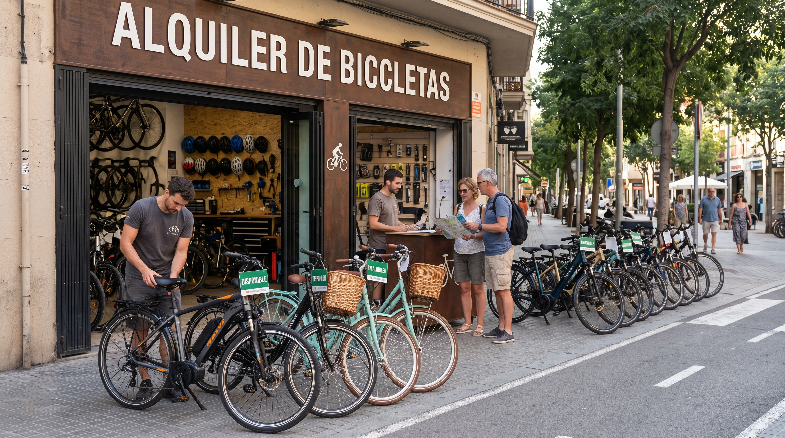
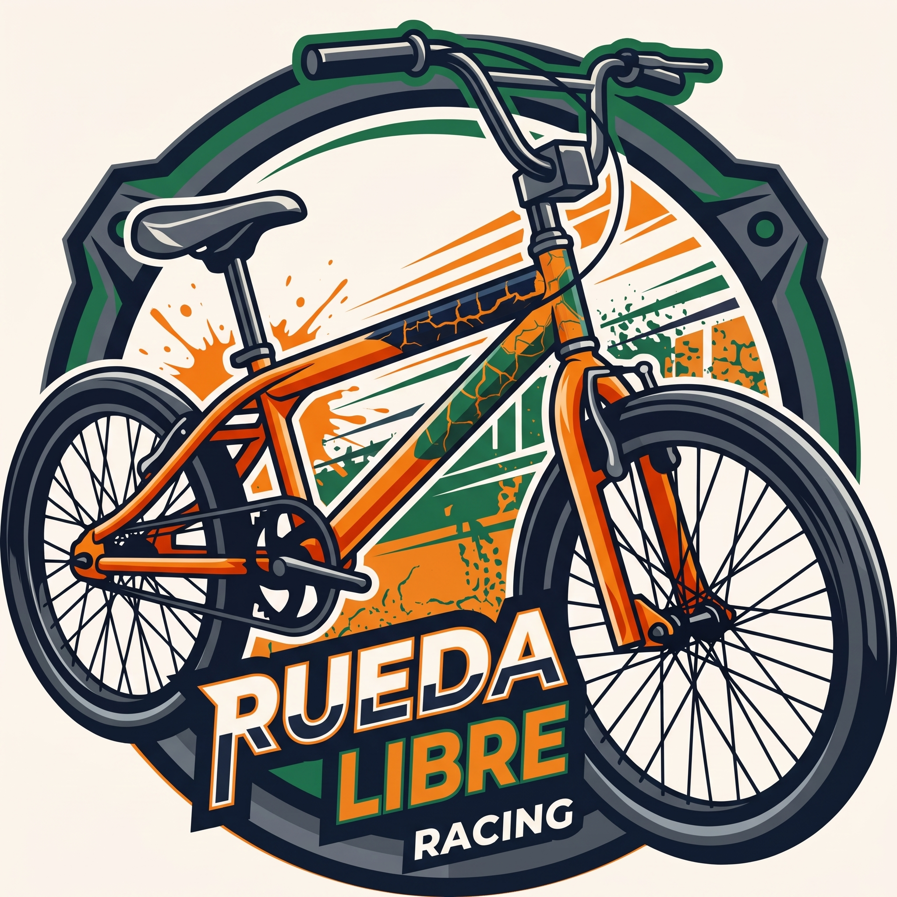

Alquiler de bicicletas

Alquilamos bicicletas urbanas, de montaña y eléctricas. Todo alquiler incluye casco y candado.

Alquiler de bicicletas en Medellín, Colombia, te invitamos a conocer. Visítanos, mira dónde encontrarnos.
Somos una empresa dedicada al alquiler de bicicletas en Medellín, Colombia, contamos con bicicletas de todo tipo para todos, además tenemos convenio con encicla. Somos una familia para ti.
Ofrecemos bicicletas de todo tipo para todos los gustos y necesidades.

Alquilamos bicicletas urbanas, de montaña y eléctricas. Todo alquiler incluye casco y candado.

Hacemos recorridos por los barrios de la ciudad de Medellín.

Aprende los fundamentos del mantenimiento y reparación de bicicletas.
Alquilar con nosotros es fácil, sigue estos pasos.
Estamos ubicados en el centro, cerca a la catedral.
Escríbenos a hola@ruedalibre.example